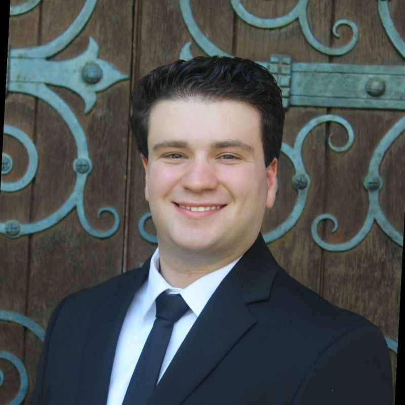

Hi! I am a predoctoral researcher at Stanford Law School, working with Professor John Donohue. I will be applying to economics PhD programs this fall.
I hold a Bachelor's in Economics and Mathematics with Highest Honors from Swarthmore College.
I am interested in public economics and political economy. I am particularly interested in how voter enfranchisement and election laws affect who lawmakers are incentivized to help, and how social safety net program design affects who is ultimately reached.